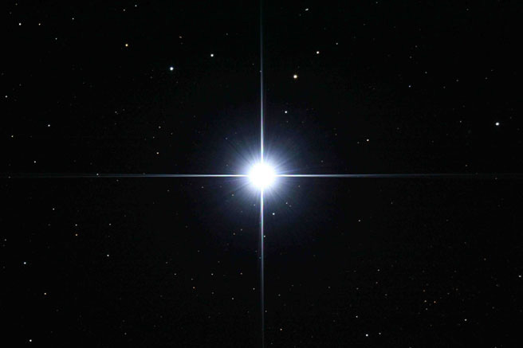

La óptica (del latín medieval opticus, relativo a la visión, proveniente del griego clásico optikós), es la rama de la física que involucra el estudio del comportamiento y las propiedades de la luz, incluidas sus interacciones con la materia, así como la construcción de instrumentos que se sirven de ella o la detectan. La Óptica es la rama de la Física que estudia el comportamiento de la radiación electromagnética, sus características y sus manifestaciones. La óptica es un pequeño campo dentro de la ciencia y la tecnología, pero que impacta significativamente a toda la sociedad, consideró el empresario Marc Himel, al participar en el Cuarto Congreso Regional de Óptica (CReO) 2015.
La óptica generalmente describe el comportamiento de la luz visible, de la radiación ultravioleta y de la radiación infrarroja.
Al ser una radiación electromagnética, otras formas de radiación del mismo tipo como los rayos X, las microondas y las ondas de radio muestran propiedades similares.
¿Còmo funciona la òptica?
Abarca el estudio de la reflexión, la refracción, las interferencias, la difracción y la formación de imágenes y la interacción de la radiación con la materia.
¿Dònde podemos observar este fenòmeno?
Refirió que impacta en aspectos de sustentabilidad de medio ambiente, como el abaratamiento de la energía solar, la fusión de energía, el desarrollo y abaratamiento de luz LED o el uso de cámaras termales.
También en aspectos de salud, consideró, no sólo en nuevos tipos de lentes que ayudan a la visión, sino en el desarrollo de micro cámaras que se pueden tragar como píldoras para observar, por ejemplo, algunos tipos de cáncer, como el de colon o esófago.
En vigilancia y seguridad también tienen amplios usos que van desde las imágenes termales que permiten a los bomberos salvar vidas en incendios.
Además en identificaciones biométricas (de rostro, ojos y dactilares) más simples, y el uso de la fotónica para seguridad en vehículos, empleando imágenes al frente, costado, interior y la parte trasera de autos y camiones.

OPTICA FISICA
INICIO